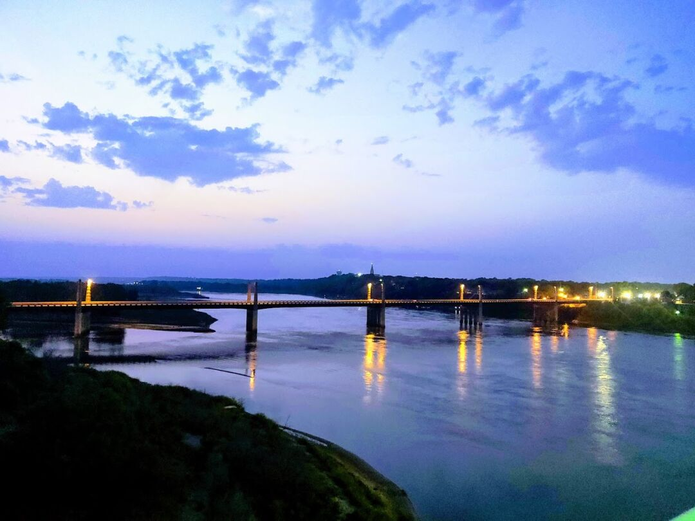

The Black Hills of South Dakota (Lead / Deadwood / Rapid City)
While we stayed mostly in Deadwood, the whole area needs to be taken into account, so I’ve broken up some of this by city. This area has a lot of history so I’ll include some as it’s really necessary to see why we chose to visit and why it is now our top spot on our ranking.
Spearfish
We stayed a few days in Spearfish, due to the site in Deadwood not being available yet. We were able to find an RV park with a walking path that connected to a larger paved bike path. Ezri and I did a couple runs and walks through there and she found a love for trying to imitate the buzzing insects.
This RV park also has daily ice cream socials, $3 a person for all you can eat, and we were thrilled to find it was outdoors and properly distanced. It was a really great way to meet and chat with our fellow RVers.
Spearfish is a medium small town, with about 10k people, and large enough to have a decent selection of restaurants, chain grocery stores, and a Wal-Mart. It’s only about a 25 minute drive from Deadwood, so our next hop was a short one.
Unfortunately, the cheap tires that came with the RV decided to develop bubbles already, so we also had to upgrade them while at our next stop.
Deadwood
We stayed in an RV park nestled into a gulch for the rest of the 3 weeks we were in the area, and practically on the George S. Mickelson Trail, 108.8 miles of dirt trail that follows a former railroad. Perfect for running, walking, cycling, and open to snowmobiles in the winter, this is one of the reasons we wanted to check out the area.
Deadwood is a small town of 1300, and has a famous history as an old west town, with a cemetery near the top of a mountain that has the graves of Wild Bill Hickok, Calamity Jane, and Seth Bullock. Around that area is also a hiking trail that Ezri and I took; though we accidentally went off trail and nearly doubled the distance, we had a lot of fun and there were some really great views.
Due to the old West history, Deadwood’s main income source is tourism, and they have a great downtown with a lot of activities (though some are shut down due to covid). Every Thursday night is family night at the open air stage, and almost every day they have reenacted shootouts on main street every 2 hours for the tourists. There are also casinos with single deck blackjack, cheap prime rib buffets, and James says it really reminds him of old Vegas, back when he first got there. There’s also a coffee shop/glass blowing studio with some gorgeous pieces. They normally have glass blowing classes too.
The area is very mountainous, so most of the houses are built multi-storied, with small footprints and tiny yards. They also frequently will have stairs leading from the street to the house, as nearly all are up on a hillside. Garages are rare, and almost never attached, instead being next to the street. This makes for a very unique aesthetic that I really loved, so much so that when I found a house in town, with over 10 acres (impossible!), I convinced James we had to at least check it out, with the idea of possibly buying, renting out the house while we continue on our journey, then returning and building a new house on the other acreage, or selling the whole thing if we decided on a different area.
We contacted a Realtor, and, perhaps luckily, found that the property has very little land that is close enough to flat to use, and the house needs more work than we’d be willing to do, especially remotely. I was a little bummed, but it’s ultimately for the best as we want to see more places before locking ourselves in somewhere. There’s also a challenge with older buildings in the area, as they are under special historic zoning and any changes have to go through a review board. Definitely not something we’d want to navigate from a remote position on top of the regular risks of hiring people to do work without being able to check it yourself.
There’s a nice playground in Deadwood too, a little over a mile from the RV park, so we ended a few runs there so she could get some play time in. Running in the area definitely gave me a challenge with elevation change, especially because the RV park is higher up so every run ended in a steep uphill. The RV Park also has it’s own history, with an abandoned mine on the property. We got to see some of the old machinery, and I found a rock with what I think is a little gold in it.
The temperature can change pretty rapidly there, we went from 80 degree days to 8ish inches of snow and back again over about a week’s span. Ezri of course loved the snow, but we quickly realized blue jeans aren’t sufficient snow gear, as they got soaked.
Here’s the day after Labor Day:

And here’s three days later:
Lead
Lead (pronounced “leed”, named after mining “leads”) is a small town of about 3,000 about 10 minutes from Deadwood, and has a lot of mining history. The Homestake Mine was started in 1876, and until it closed down in 2002, was the deepest mine in North America.
When it was shut down, the town suffered and started to decline, but then in 2006, the Sanford Lab came to town and wanted to use the mine for neutrino research. Due to the depth of the mine, they are able to do research with far less white noise to have to account for. You can read more about it here: https://www.sanfordlab.org/
As part of the deal, the Sanford lab put $20mil towards education reform in Lead/Deadwood (they share a single school district), which they plan to use to incorporate more STEM in the schools. There is also a newsletter that is sent to all Lead residents when the lab has updates on their projects, and they host monthly deep talks (until Covid-19, that is) with the community. The influx of STEM related education and people is something we find very appealing, and rare within such a small town.
Lead’s downtown is walkable, though less tourist-focused than Deadwood. One thing we are finding with smaller towns, is the lack of regular open hours on businesses. There is one store in Lead that has ice cream and who knows what else that we wanted to see, but it was always closed anytime we had time (like the weekend), then we’d see it open on the way to dinner or some other off hour that we didn’t have the time to stop. Maybe we’ll make it back there to see it later on in our journey. There’s also a mine between Lead and Deadwood that you can tour underground and pan for gold that I wanted to see; we put it off one weekend, only to see ‘Closed for the season’ posted afterwards, so that’s another one for if we make it back.
Lead has a non-chain grocery store with a good selection, so we shopped there most of the time rather than making the drive to Spearfish. In the same building is a coffee shop that has become a bit of a community hangout spot; the owner lets people sign the entryway, and has tchotchkes and toys on display that have been brought in. We had a Las Vegas magnet that we added to the collection.
Lead has a very vibrant Arts community, and there is even a Makerspace in the process of opening up! We’d love to be involved if we end up back in the area.
An antique piece of Artwork in a church that is now an Arts & Crafts shop:
Lead also has an opera house that normally has events at least every month. The list of events for the area has at least 4 things every month, from 5ks, snowshoe walks, and bicycle rides to parades and play performances.
Rapid City
The nearest big-ish city for the area is Rapid City, with 75,000 people. It’s about 45 minutes drive from Deadwood. They have a dinosaur park that was built in the 30s, and from our observations, the artist must have been working from memory, as the inaccuracies were quite bad. Ezri loved it though, and since the dinosaurs are made of concrete, they allow the kids to play on them.
We also went to a dinosaur museum that was more scientific, but Ezri got a bit scared as most of their exhibits were dinosaurs with the skin on, and she much prefers just the bones. Still, they had a digging area at the end with fake eggs and bones to uncover through the rubber ‘dirt’. She spent a long time there, and was upset when we finally left.
One thing we found really odd is that the hotels in the area are apparently competing for who has the longest water-slide. Signs like ‘146 foot water-slide’ were on each hotel we went past, with the water-slides jutting out from a corner of the hotel. I’m not sure if this is a pretty normal thing, but it was a first for us.
Rapid City has all your big city amenities, like Target and several sporting goods stores. There’s no Costco, but that’s not really something that’s very high up on our lists anyway.
Next Stop
We pulled into our next stop, South Yankton Nebraska (Yankton South Dakota somewhat spans across the state lines) last week, and we’ll be staying 2 weeks here.
